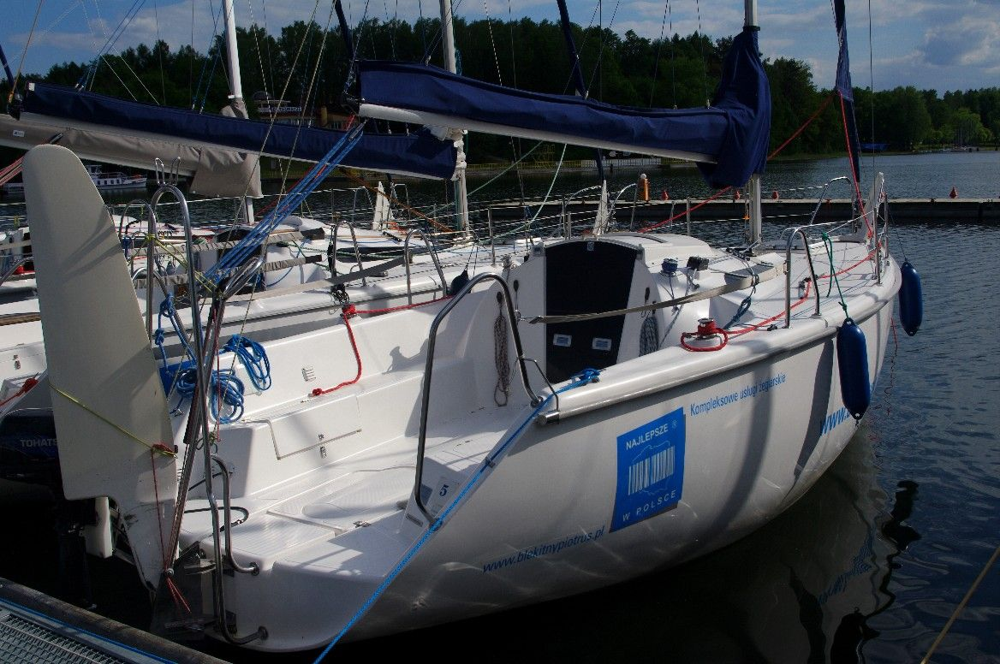
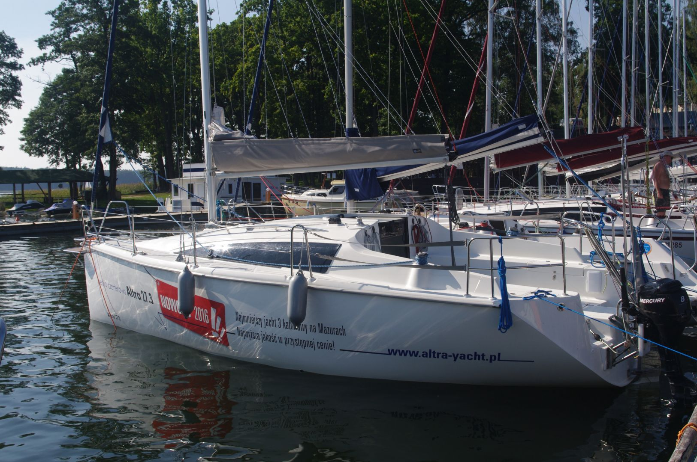
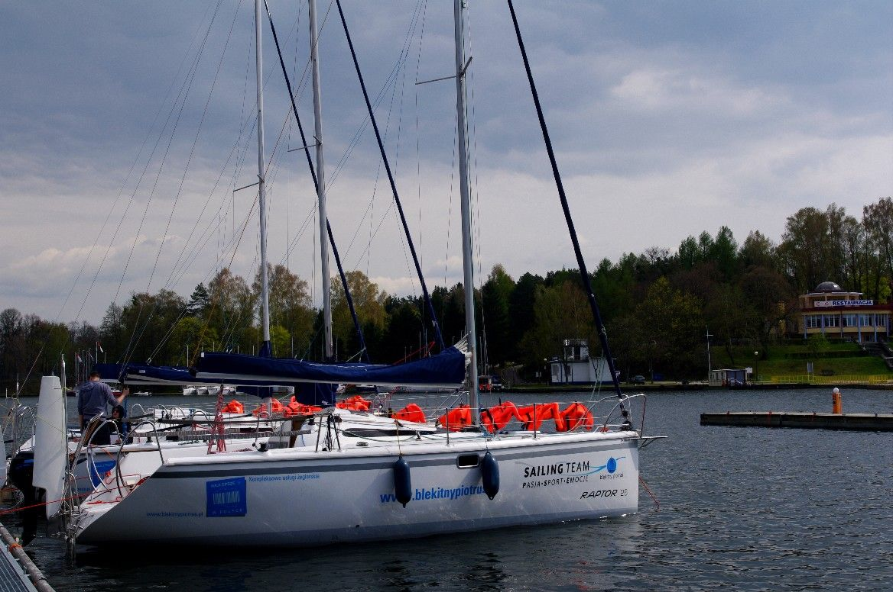

Czartej Jachtów - Mazury
Twister 780 komfort
Bardzo szybki, zwrotny i lekki w prowadzeniu. Znakomite cechy nautyczne Twistera 780 doceniło już wielu żeglarzy. Jest on często wybierany przez tych, którzy cenią sobie bezpieczeństwo, wygodę oraz „regatowe zacięcie”. Konstrukcja Twistera 780 czyni go jednym z najszybszych turystycznych jachtów pływających na Mazurach. Posiada przestronny wygodny kokpit mieszczący całą załogę oraz funkcjonalnie zagospodarowane wnętrze. Bogate wyposażenie jachtu pozwala na komfortową oraz łatwą żeglugę.
- Rok produkcji: 2014
- Długość kadłuba: 7,80 m
- Szerokość całkowita: 2,70 m
- Zanurzenie min/max: 0,35m/1,45 m
- Liczba koi: 8 (6+2)
- Kabiny: 1 dziobowa zamykana + 1 kingston
- Wysokość w kabinie: 1,80 m
- Ożaglowanie: 30 m²
- Silnik zaburtowy: 8 KM
Altra 27
Ekonomiczny trzykabinowy jacht na Mazurach - bardzo szybki, zwrotny i lekki w prowadzeniu. Niewątpliwą zaletą tego jachtu jest jego zrównoważenie żaglowe. Znakomite cechy nautyczne Altry 27 zostały docenione przez fachowców. Polecamy ten jacht tym, którzy cenią sobie bezpieczeństwo, wygodę oraz „regatowe zacięcie”. Konstrukcja Altry 27 czyni ją jednym z najszybszych turystycznych jachtów pływających na Mazurach, następcę Raptora 27. Posiada przestronny wygodny kokpit mieszczący całą załogę oraz funkcjonalnie zagospodarowane wnętrze. Bogate wyposażenie jachtu pozwala na komfortową oraz łatwą żeglugę.
- Rok produkcji: 2020
- Długość kadłuba: 8,23 m
- Szerokość całkowita: 2,80 m
- Zanurzenie min/max: 0,35m/1,50 m
- Liczba koi: 8 (6+2)
- Kabiny: 2 rufowe i 1 dziobowa zamykana
- Wysokość w kabinie: 1,80 m
- Ożaglowanie: 32 m²
- Silnik zaburtowy: 10 KM
Raptor 26 komfort
Raptor 26 to większa i wygodniejsza wersja jachtu turystycznego o regatowym zacięciu. Jacht jest dobrze przystosowany do prowadzenia szkoleń żeglarskich. Posiada doskonałe własności nautyczne - co sprawiło, że zyskał wielu sympatyków. Do niewątpliwie do jego zalet zaliczyć trzeba ogromny kokpit mieszczący całą załogę. Wnętrze jest przestronne i jasne co sprzyja wypoczynkowi wewnątrz jachtu.
- Rok produkcji: 2015
- Długość kadłuba: 8,0 m
- Szerokość całkowita: 2,70 m
- Zanurzenie min/max: 0,30 m/1,50 m
- Liczba koi: 8 (6+2)
- Kabiny: 1 kabina dziobowa + 1 kingston
- Wysokość w kabinie: 1,80 m
- Ożaglowanie: 31 m²
- Silnik zaburtowy: 8 KM
Kliknij na jacht aby zarezerwować